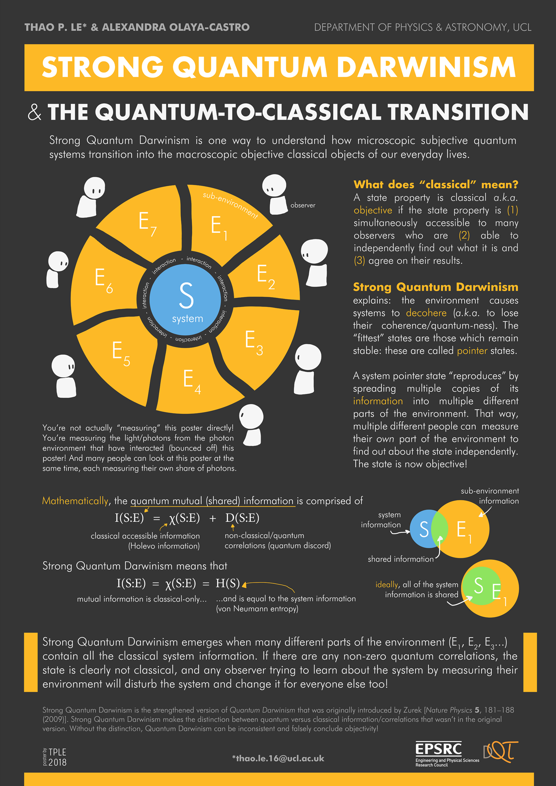

The following poster was presented at the UCL Doctoral School Research Poster Competition 2018, on the 5th June 2018. The corresponding paper for this work is Strong Quantum Darwinism and Strong Independence is equivalent to Spectrum Broadcast Structure.

Department of Physics and Astronomy, UCL
*thao.le.16@ucl.ac.uk
Strong Quantum Darwinism is one way to understand how microscopic subjective quantum systems transition into the macroscopic objective classical objects of our everyday lives.
A state property is classical
explains: the environment causes systems to decohere (
A system pointer state "reproduces" by spreading multiple copies of its information into multiple different parts of the environment. That way, multiple different people can measure their own part of the environment to find out about their state independently. That state is now objective!
The figure consists of a blue system S is surrounded by different yellow-coloured subenvironments labelled E1, E2,...E7. The system and subenvironments are interacting with each other. Seven observers surround the subenvironments, observing the sub-environments.
You're not actually "measuring" this poster directly! You're measuring the light/photons from the photon environment that have interacted (bounced off) this poster! And many people can look at this poster at the same time, each measuring their own share of photons.
Mathematically, the quantum mutual (shared) information is comprised of classical accessible information (Holevo information) [and] non-classical/quantum correlations (quantum discord):
\(I(S:E) = \chi(S:E) + D(S:E)\).
Strong Quantum Darwinism means that mutual information is classical-only...and is equal to the system information (von Neumann entropy):
\(I(S:E) = \chi(S:E) = H(S)\).
A venn diagram with two circles, a blue circle representing the system information and a yellow circle representing the sub-environment information. Where the circles overlap, in green, represents the shared information.
Ideally, all the system information is shared. A venn diagram where the circle representing the system information is entirely contained inside the yellow circle of the sub-environment information. The system-information circle now appears entirely green.
Strong Quantum Darwinism emerges when many different parts of the environment (E1, E2, E3...) contain all the classical system information. If there are any non-zero quantum correlations, the state is clearly no classical, and any observer trying to leaern about the system by measuring their environment will disturb the system and change it for everyone else too!
Strong Quantum Darwinism is the strengthened version of
{kind=link}